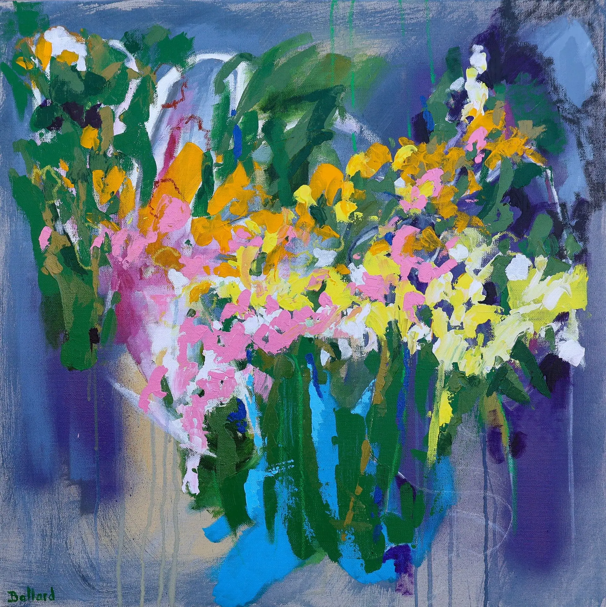
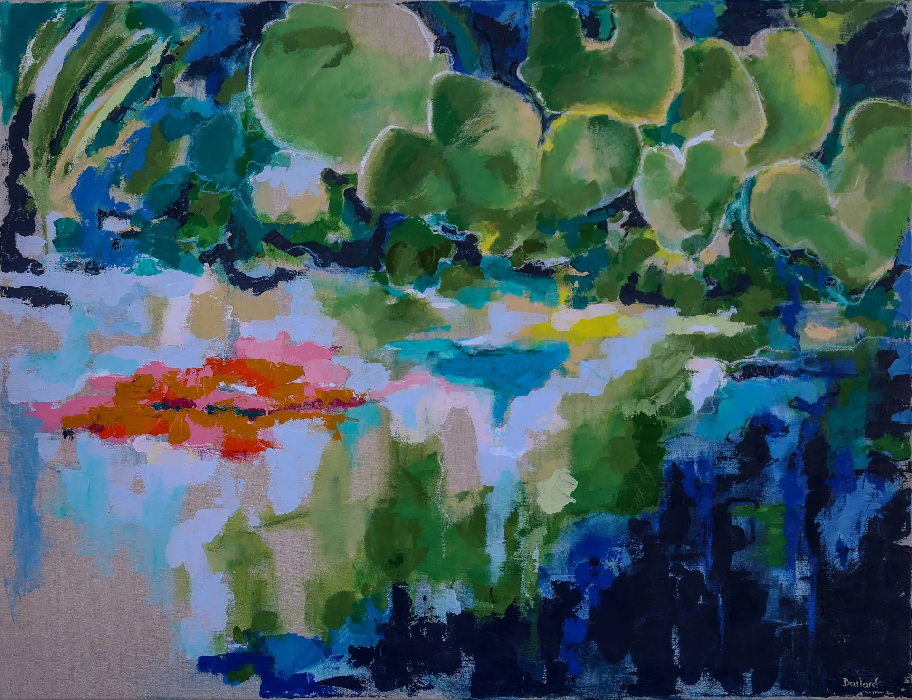
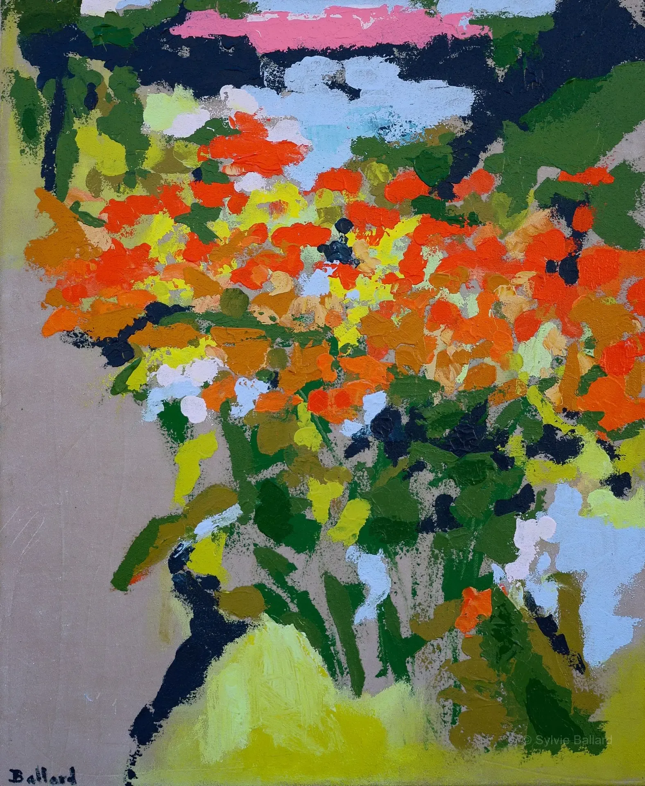
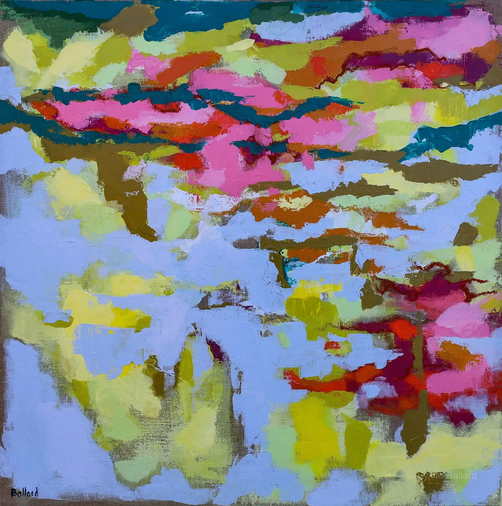
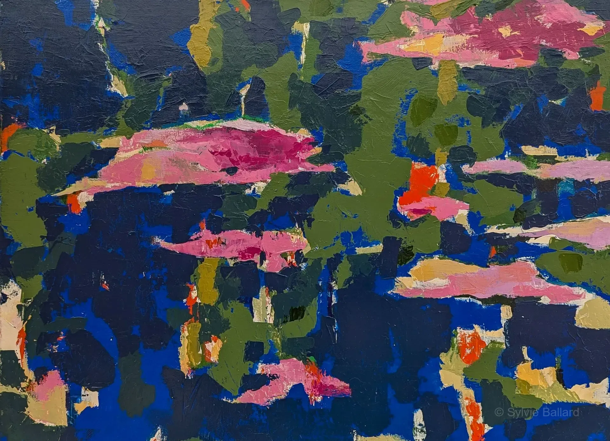
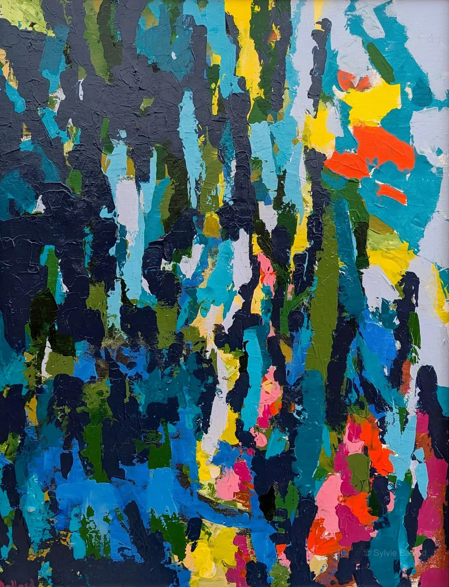
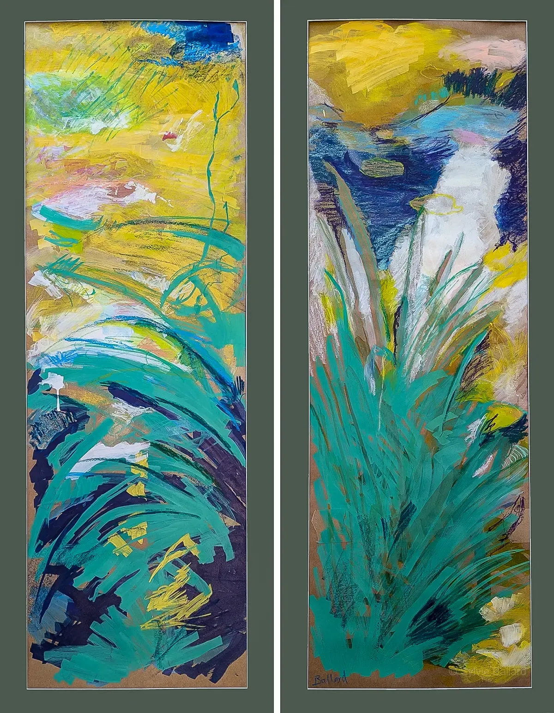
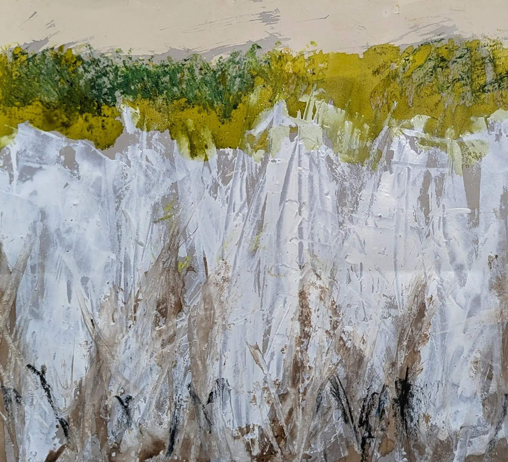
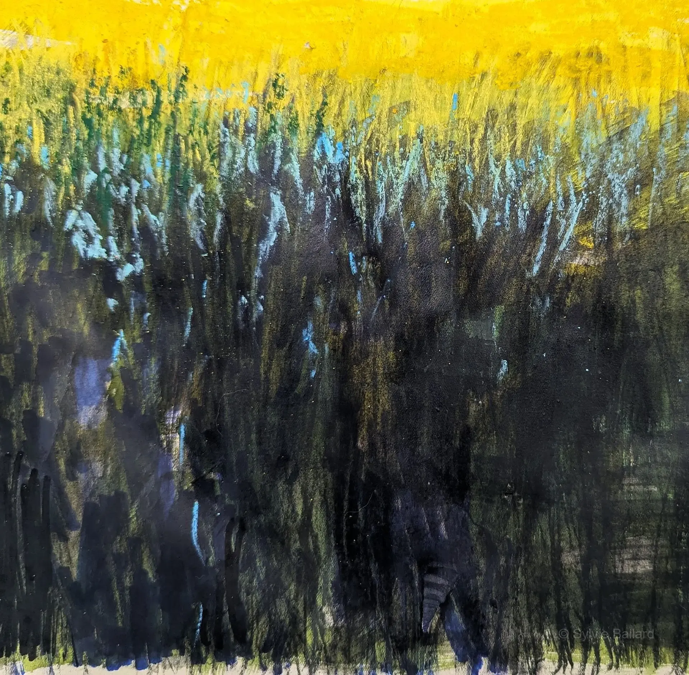

Série Jardin de Giverny

Eclats suspendus

Reflets tremblants

Silence immobile

Impulsion florale
Eveil nocturne

Territoires fragmentés
Douceur indocile

Rêve sur l'eau
Rythme suspendu
Sans titre

Ciel et eau

Echos végétaux

Variations végetale I et Variation végetale II
Série Graminées et herbes folles

Champs n°2

Champs n°1